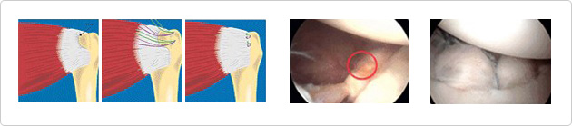

Rotator cuff tear
Anatomically speaking, the rotator cuff is four muscles that act to stabilize the shoulder. Rotator cuff related diseasesareassociated with the adult
shoulder being in chronic pain as a result of inflammation, degeneration and tear of the rotator cuff

Treatment
- Conservative treatmentsinclude non-steroid anti-inflammatory agents, steroid related drug injection, physical therapy, etc. Patients can perform
activities which do not cause pain but refrain from activities or motionsthat result in pain when the conservative treatment is being administered.
It is appropriate to start sports treatment to help the rotator cuff recover its function. Patients should consider this surgery if there has been no
improvement after several months of treatment.